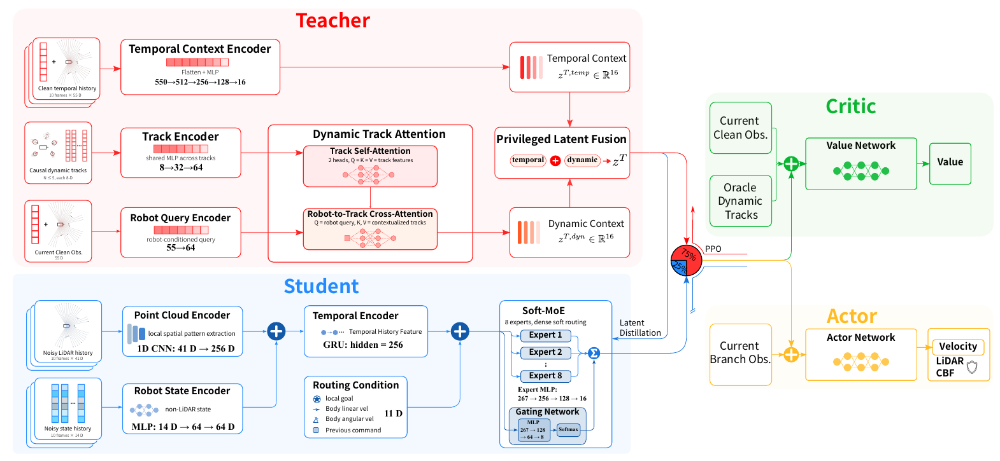
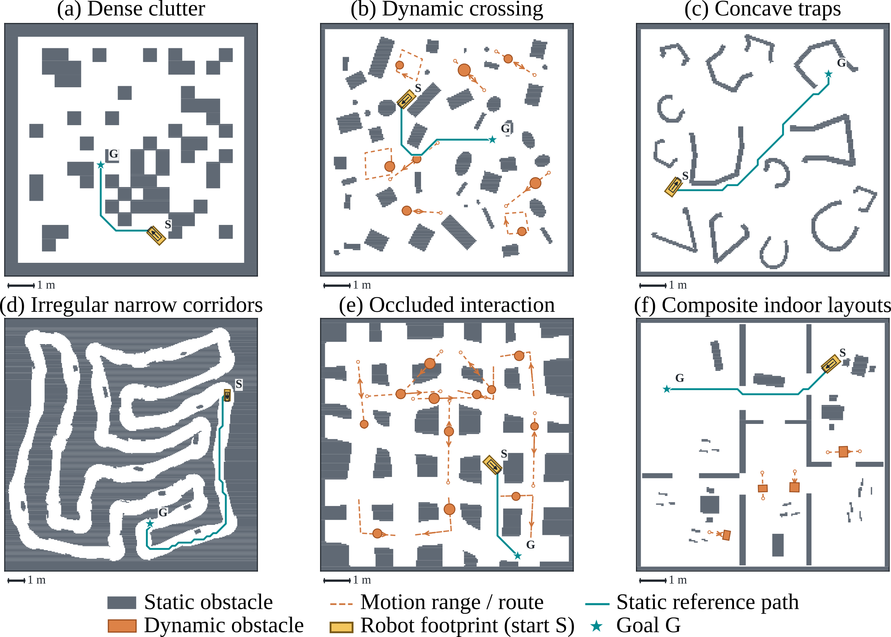

Privileged supervision
The Teacher combines clean observation histories with causal dynamic-obstacle tracks. The Student learns its navigation representation through latent distillation.
A single local-navigation policy for obstacle avoidance, narrow passages, and local-trap escape, using only onboard observations and a local goal.
Distill a privileged Teacher into a temporal Soft-MoE Student that can run on the robot.

The Teacher combines clean observation histories with causal dynamic-obstacle tracks. The Student learns its navigation representation through latent distillation.
A GRU encodes ten observation frames. Eight softly routed experts combine complementary navigation features into one representation.
600 procedural layouts cover six scene families. Asymmetric randomization adds sensing noise and delay to the Student while keeping Teacher supervision clean.
Onboard observations + local goal → temporal Student → shared Actor + LiDAR CBF → velocity commands. No explicit object tracking or global-map input.

@misc{zhang2026tamenav,
title = {TAME-Nav: Temporal Asymmetric Mixture-of-Experts
Distillation for Agile and Versatile Robot Navigation},
author = {Zhang, Lingjie and Xue, Jun and Wang, Shanze and Xi, Haoyu
and Zhang, Xinming and Shen, Xiaoyu and Zhang, Wei},
year = {2026},
note = {Manuscript}
}